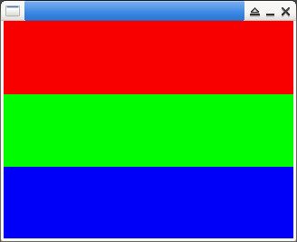

參考資訊：
https://www.libsdl.org/release/SDL-1.2.15/docs/html/index.html
main.c
#include <stdio.h>
#include <stdlib.h>
#include <stdint.h>
#include <SDL.h>
#define W 32
#define H 24
int main(int argc, char **argv)
{
int x = 0;
int y = 0;
SDL_Surface *screen = NULL;
uint16_t buf[W * H] = { 0 };
SDL_Init(SDL_INIT_VIDEO);
screen = SDL_SetVideoMode(320, 240, 16, SDL_HWSURFACE);
for (y = 0; y < H; y++) {
for (x = 0; x < W; x++) {
if (y < 8) {
buf[(y * W) + x] = 0xf800;
}
else if (y < 16) {
buf[(y * W) + x] = 0x7e0;
}
else {
buf[(y * W) + x] = 0x1f;
}
}
}
SDL_Surface *t = SDL_CreateRGBSurfaceFrom(
buf,
W,
H,
16,
W * sizeof(uint16_t),
screen->format->Rmask,
screen->format->Gmask,
screen->format->Bmask,
screen->format->Amask
);
SDL_SoftStretch(t, NULL, screen, NULL);
SDL_Flip(screen);
SDL_Delay(3000);
SDL_FreeSurface(t);
SDL_Quit();
return 0;
}
編譯、執行
$ gcc main.c -o main -lSDL -I/usr/include/SDL $ ./main
